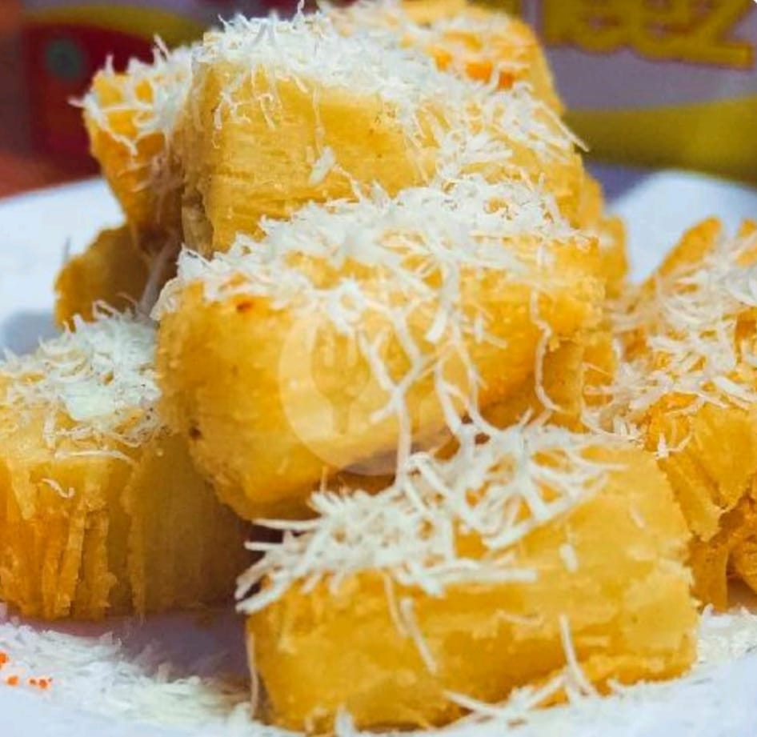

Dari Singkong yang Sederhana, Jadi Cemilan Kesayangan.
Singkong Keju Kenti hadir sebagai pilihan cemilan yang sederhana, akrab, dan cocok untuk berbagai suasana yang kamu lewati. Kami ingin menghadirkan rasa singkong yang gurih dengan pilihan rasa yang mudah disukai olehmu.
Mulai dari rasa keju yang gurih, balado yang berbumbu, original yang klasik, hingga singkong setengah matang untuk diolah sendiri—semuanya bisa dipilih sesuai seleramu.
“Gurihnya Nempel, Enaknya Bikin Ngangenin!”
Karena cemilan bukan cuma soal rasa. Ada cerita di balik setiap gigitan: waktu nyantai, ngobrol bareng keluarga, belajar bareng teman, atau sekadar me-time di rumah.